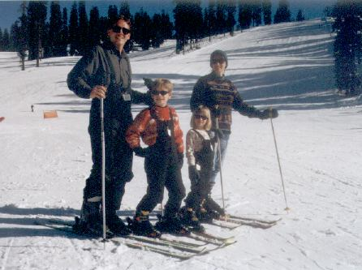
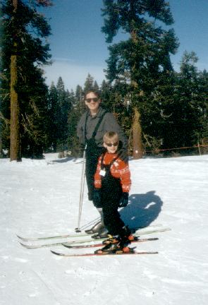
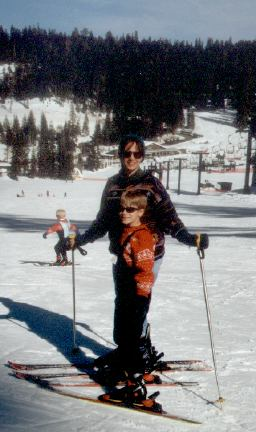
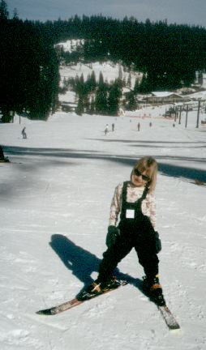
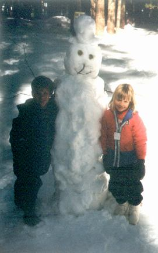

|
In February, 1999, we took four days to visit Yosemite National Park. Two of those days we spent skiing at Badger Pass (in Yosemite National Park). This was the first time for Eric or Ellen on skis, and they were both very excited! Rick and Laura hadn't skied in about 10 years, so we were excited and cautious. Yosemite has a great midweek family deal, where you can stay at Yosemite Lodge, kids stay free, and everyone gets free lift tickets at Badger Pass for the days following the nights at the Lodge. It cost us about $65 per night, plus equipment rental and lesson fees. We used the free shuttle each day to get between the Lodge and Badger Pass, which worked out very well. The first night we were there, a 350 pound bear broke into a car in the lot next to ours. The bears are mostly hibernating this time of year, but this was a pregnant bear and apparantly awake and hungry! The second morning we were talking to the shuttle stop, we found a coyote in our path. He seemed calm and collected, but we took a wide berth! Besides skiing, we also skated at Yosemite's outdoor skating rink, which was a lot of fun. Unfortunately, no photos were taken, so none can be shared! |
|
 Rick, Eric, Ellen and Laura at Badger Pass. |
|
 Rick and Eric at the top of the Eagle lift. |
|
 Laura and Eric at the top of the Bruin lift. |
|
 Ellen at the top of the Bruin lift. |
|
 Eric, "Snowy" and Ellen, at the Crane Flat snow play area, Route 120, Yosemite National Park. |